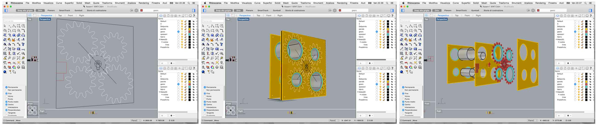
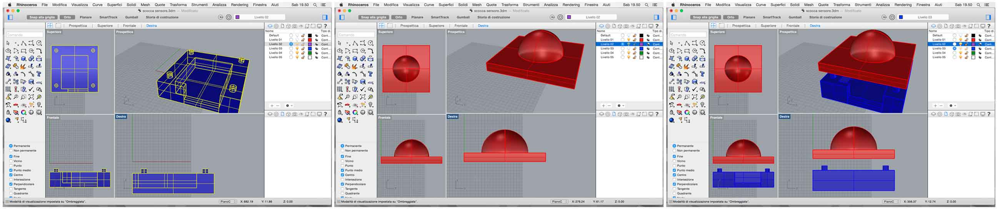

An interactive panel to protect all that you love. It opens and closes responding to inputs derived from environmental conditions, creating an artistic and functional effect.
ACTIVITIES:
1) Designing;
2) 3D modeling;
3) Laser cutting;
4) 3D printing;
5) Electronic Design;
6) Programming;
7) Assembly.
For the first prototype, I had chosen to use a toothed belt to move pulleys. However, I realized that using gears could reduce friction and could make the movement smoother. So, for the final project I chose to use gears.
Software: to simulate the movement of gears, I have modeled them with Solidworks. SolidWorks is a 3D mechanical CAD (computer-aided design) program that runs on Microsoft Windows and is being developed by Dassault Systèmes SolidWorks Corp., a subsidiary of Dassault Systèmes, S. A. Having to use Microsoft Windows, I worked with Nader Alkhatib's computer. I thank him.
Gears features:
2 gears: diameter 12 cm – 12 tooth
2 gears: diameter 18 cm – 16 tooth
1 servo gear: diameter 5cm - 10 tooth
Pressure angle: 20
After simulating the movement of the gears with Solidworks, I redesigned them with Rhinocheros. I imported the file solidoworks/assem1.IGS, then I reworked their shape to make them stronger, preserving their main features.
Later, with Rhino, I designed a cover for the photoresistor. The goal is to limit the direct light and diffuse it more homogeneously.
Materials chosen for the three layers of the panel: transparent plexiglass, black Multiexel and plywood (I choose the transparent plexiglass in order to make noticeable the mechanical system).
I exported the 3d model of the gears in .dxf;
I opened the project with PhCad and I set the parameters of speed (mm / s) and power (%) of the individual layers:
Settings
Transparent plexiglass 500x1000x4mm - speed (20mm/s) - work power (40%) - corner power (30%)
Black Multiexel 500x1000x3mm - speed (40mm/s) - work power (40%) - corner power (30%)
Plywood: 500x1000x8mm - speed (60mm/s) - work power (50%) - corner power (40%)
I printed the cover for the photoresistor.
Settings
Print Speed: 120 (mm/s)
Printing Temperature: 185 (C)
Bed Temperature: 60 (C)
Fill Density: 20 (%)
Filament Diameter: 1.75 (mm)
Filament: White PLA
Software:
- Arduino
Electronic Components:
- FabKit Miky
- 1 photoresistor
- 1 broken servomotor
- Power module
- 1 H-bridge
POWER MODULE
The power module comes from an old 5v-self phone.
BROKEN SERVOMOTOR, H-BRIDGE
In my first prototype, I choose Wiper motor to move the mechanism, but it was too massive and too powerful. Therefore I chose a servomotor, which is perfect for my needs.
Hobby servomotors can withstand a maximum 6v except exceptional circumstances. It happens in a FabLab to find servomotors with electronics unusable or damaged, but with motor and gears fully functional. In fact, by getting rid of old electronics, and by fueling the engine with desired voltage, gears will turn. However, lacking the electronics, the positioning control will be also missing, this task was in fact performed by the potentiometer. For this reason, you can remove the potentiometer and replacing it with a rotary encoder (the mouse scroll), and you can check the servo position with Arduino. If you want to make more turns to the main gear, you can also remove the physical end stop that is usually found over gears or on the shell. To allow the servo to turn in both directions, I connected an H-bridge to the system. Through the software i modulated the opening of the H-bridge depending on the desired position. The cool fact about this “servo-tuning” is that we are no more bounded to the 6v factory max power, but we can overfeed our servo. Of course the motor will be much more stressed so I do not recommend to go over 12v.
I added the Smoothing sketch i found on the Arduino Playground. The smoothing sketch takes a fixed amount of data and gives the average as output. In this way i managed to get a smooth and stable data from the sensor without peaks and other signal-waste.
Cover sensor-3D Printing
CoverSensor.3dm CoverSensor1.gcode CoverSensor2.gcode CoverSensor1.stl CoverSensor2.stlArduino-Sketch
Sketch.ino> smooth.ino L298 ponte H.pdf Photoresistor scheda.pdfLaser Cut
Model.3dm cut/1.dxf cut/2.dxf cut/3.dxf cut/4.dxf cut/5.dxf cut/6.dxf cut/7.dxf cut/8.dxfSolid works
solidworks/Assem1.IGS solidworks/Assem1.SLDASM solidworks/Assem1.SLDPRT